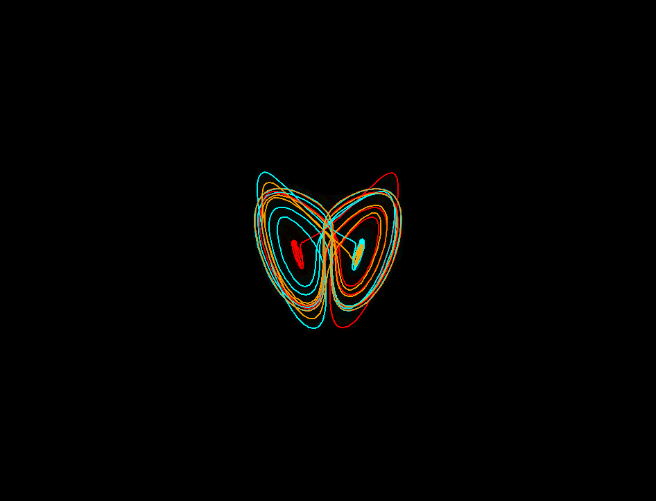
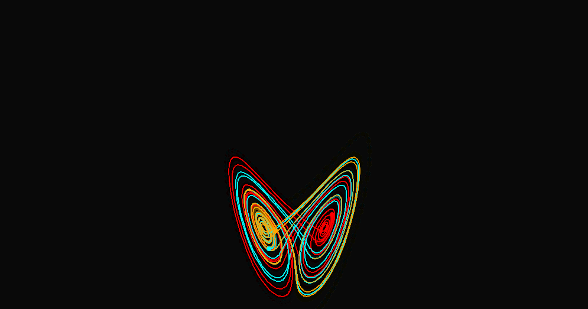

Below are some cool snapshots I captured from adjusting the parameters of my own simulations. Dynamical systems can have some very pretty geometric manifestations, due to the uniqueness of solutions of ODEs. This typically causes these infinitely long parametric curves to draw out some very interesting shapes in a finite space (this is how we also get fractals). If you would like to generate similar figures, you can go to my simulations page here, and click the red button that says "Click to launch", and vary the \(\sigma\), \(\rho\), and \(\beta\) values above it to get different behaviors. You can click pause when you find an interesting curve and screenshot.
Fox-like 3D parametric curve visualized in 2D, produced by altering the normal coefficients of the Lorenz system.

Classic 2D visualization of Lorenz system with normal and constant coefficients. Three trajectories (orange, blue, and red), are started within 0.001 of each other, yet very different trajectories are formed. 
Lorenz Attractor with large orbital amplitudes.